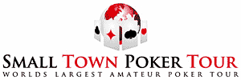

Starting A Fundraising Campaign
Funding Sources and Prospects:
Tapping The Philanthropic WellIn Search Of The Elusive Major Giver
Rating And Evaluating Prospects: Whom Do You Ask For How Much?
Annual Fund Giving & 'Getting' Guidelines
Organizing a Campaign:
How To Recruit Your Volunteer Fund-Raising Team12 Things You Should Know About Setting A Capital Campaign Goal
For Want Of A Campaign Solicitation Kit A Campaign Was Lost
Managing a Campaign:
Designing A Communications Plan To Enhance Your Fundraising CampaignThe Name Is The Game: Memberships And Named Gifts
Asking for the Money: If You Don't Ask You Won't Get


Thanks for visiting FundRaisers.com! Share it with other people for their fundraising campaigns.

Featured Idea:
Great American Duck Races: On Your Mark, Get Set….Float?
 Preliminary visions of the duck races – webbed feet placed in starting blocks, feathered chests waddling towards the finish line – were quickly dispelled as two industrial front loaders unceremoniously dumped over 13,000 rubber ducks into the mighty Rogue River. The bathtub buddies raced from the Parkway Bridge to the Caveman Bridge in approximately 45 minutes. The excitement was palpable as the duck's adoptive parents waited for the winners at Riverside Park. An estimated 500 supporters were on hand at the finish line.
Preliminary visions of the duck races – webbed feet placed in starting blocks, feathered chests waddling towards the finish line – were quickly dispelled as two industrial front loaders unceremoniously dumped over 13,000 rubber ducks into the mighty Rogue River. The bathtub buddies raced from the Parkway Bridge to the Caveman Bridge in approximately 45 minutes. The excitement was palpable as the duck's adoptive parents waited for the winners at Riverside Park. An estimated 500 supporters were on hand at the finish line.
The minimal cost of adopting a duck - $10.00 each – encouraged local residents to help the Rotary Clubs raise funds for a news sports facility, Morrison Centennial Park. The generous prizes were integral to the success of the events. The grand prize, $20,000 toward a car from a Grants Pass Auto Dealership went to Tina Lindall, a waitress at Galice Resort and student at Rogue Community College. She found out she was the big winner when her sister called on her cell phone. Lindall says "I was so excited, I had to pull over to the side of the road.”
An additional 14 prizes were worth an average of $1,000 each. This brought the total prize incentives for the event to more than $35,000. Gerry Watt, a Grants Pass local, bought the family package of five ducks. His purchase also came with a t-shirt, valuable coupons to local merchants and a mini version of the rubber ducky. When the voice on the other end of the phone asked for Gerald, he assumed it was a telemarketer and almost hung up. Luckily, he listened long enough to learn he'd won a home decorating package worth $1,500 at Gates Home Furnishings, a local business.
Joan Bille won a $1,000 gift basket from Gottshalks Department Store. When she found out the races were happening on her birthday, she sent her husband out to buy ducks. She says "I never win anything.” She did, however, feel lucky because of the fortuitous timing. Her husband, John, said they considered the four ducks they purchased a $40 donation to the new Sports Park. "Community support for events like the duck races is why we live here,” he said. Winning was an added bonus.
 The Rogue Duck Derby presented by the Rotary Clubs of Grants Pass, Oregon capitalized on the novelty of the event. New concepts are especially important for communities inundated with requests for donations and non-stop fundraising drives. Government funds for non profits have been stretched thin and cuts to extra curricular education programs have sent parents and participating kids out to raise money for clubs and teams that were once funded by school districts.
The Rogue Duck Derby presented by the Rotary Clubs of Grants Pass, Oregon capitalized on the novelty of the event. New concepts are especially important for communities inundated with requests for donations and non-stop fundraising drives. Government funds for non profits have been stretched thin and cuts to extra curricular education programs have sent parents and participating kids out to raise money for clubs and teams that were once funded by school districts.
The Great American Derby Duck Race is a fund-raising concept owned by Great American Merchandise & Events. They began staging the events in 1988 and recently added a turtle character to their lineup. The rubber racers are bar-coded for immediate identification of winners. A funnel-shaped boom is stretched across the finish line to capture the winners.
Both the duck and turtle characters are trademarked by their three inch size, sunglasses and an appropriate smile. Tim Matykiewicz, a
American Races representative estimates the duck and turtle races have raised over three million dollars in the last two years with more than 200 races around the world. The Great American Races concept is poised for explosive growth with successful events like the recent Grants Pass race.
Media sponsorship was crucial to the success of the event. The crowds gathered at the finish line at Riverside Park were treated to entertainment from local radio station sponsors, KAJO and KLDR. The Duck Races were also promoted by KDRV Channel 12 News and the Grants Pass Daily Courier newspaper.
Local businesses provided sponsorship on three levels: Super Duck Sponsors – Gates Home Furnishings, Premier West Bank and Southern Oregon Sanitation. Rogue Duck Sponsors: Hellgate Excursions, Home Valley Bank and Bill Thorp/State Farm Insurance. Quacker Sponsors included 17 local businesses, national franchises and church/civic groups.
The participating Rotary Clubs are thrilled with the results. Sponsors covered most of the $40,000 costs to stage the event and plans are already underway for next year's duck races. In an interview with the Grants Pass Daily Courier, race organizer Bill Thorp said, "The community's been unbelievable, they got a chance to help kids and have some fun”!
-- DeWayne Lumpkin, Freelance Writer
To find out how you can have a Derby Duck Race in your local community send email to racewithus@game-group.com.
Fundraising Tips:
New To Fundraising?
First Time Fundraising Tips
These quick and simple tips for first time fundraisers will get you on track and on your way to the first of many successful fundraisers.
-
Decide how Much Money Your Group Needs To Raise
This will help you evaluate products and programs that will be ideal for your group.
-
Watch For Hidden Costs
Don't let your group's profits disappear because of hidden costs (ex. shipping, prizes).
-
Give Yourself And Your Group Lots Of Time To Prepare
Select your fundraising program early. This will give you lots of time to plan. Include your fundraiser on the school or community calendars and newsletters.
-
Timing
Make sure to stagger the various fundraisers to avoid flooding your potential consumers and to avoid competing with other fundraisers.
-
Set Up Specific Dates And Stick To Them
If you avoid setting clear target dates the campaign tends to drag on and often without direction.
-
Try To Conduct Fewer And More Effective Programs
This will help maintain motivation and avoid "fundraising fatigue".
-
Rely On Your Fundraising Company's Expertise
Ask lots of questions and use your fundraising company's suggestions and advice.
-
Stay Motivated Throughout The Program
Some organizers tend to lose interest once the program is underway. Put a 10-12 day time limit on order taking. It's easier to stay motivated with clear goals and deadlines.
-
Communicate Clearly Before, During And After The Program Is Put In Place
Keep energy levels high by reminding parents, teachers, and other volunteers of the fundraising goals and deadlines.
-
Avoid Shipping And Ordering Problems
Work closely with your volunteers and assure their order forms are legible and filled out completely.
-
Keep Copies Of The Order Forms
Always keep copies of the order forms before you send them to your fundraising company.
-
Recruit Adult Volunteers Ahead Of Time
This will make the distribution of the products to the volunteers more efficient.
-
Double Check Products Received Against Your Order Forms
This needs to be done before the products are given to the volunteers to ensure that nothing is damaged or missing.
-
Keep Absent Volunteers Informed
Don't forget to communicate the program's kick-off and other important meetings to absent volunteers.
-
Have Fun!
A good attitude = better success.
Fundraising Tips:
How To Pick The Right Fundraising Product And Key Questions
Usually the first question that you ask yourself when you realize your group needs to raise funds is: "What Are We Going To Sell?" Get expert knowledge on how to make the right choice.
There are thousands of products available for fundraisers that range from candy to wrapping paper, cookies to inspirational goods, and nuts to sausage and cheese. After all, almost anything can be re-sold by groups for a profit.
Think about the following six questions to help you choose the right fundraising product or program for your group:
-
How Much Money Does Our Group Need To Raise?
Come up with a goal that is based on your group's needs not just one that sounds good. If your group needs to raise a few hundred dollars, lollipops or a small order of candy bars may be appropriate. If you need to raise over $5,000, you may want to use an order taker fundraiser like a popular chocolate brochure program or a cookie dough fundraiser.
-
What Would We Enjoy Selling?
Your group members will determine the success of your fundraiser. Ask them what they would like to sell and what they'd absolutely not like to sell. The more they like the products, the more confident and motivated they will be to sell them.
-
What Has Worked For Us In The Past?
'If it ain't broke don't fix it' As the saying goes, if you've had success with a certain program year after year- stick to it. Chances are, your supporters are expecting you at that same time every year and your participants are comfortable with selling the product.
-
How Fast Do We Need The Money?
Pre-sale programs (order taker) do take longer than direct sale programs (candy bars, lollipops etc.). If you need to raise funds within 1.5-2 quick weeks, we suggest you fundraise using direct-sale products. If you have 4 weeks or more to wrap up your fundraiser, a pre-sale (order taker) brochure may be ideal.
-
Are The Products We Want To Sell Of High Quality?
A consumer will be happy to support a worthy cause, however they won't be very interested in paying for inferior or significantly overpriced products. Remember that your fundraiser may be an annual or semi-annual event, and nothing builds profits like a reputation for offering top-quality products.
-
Does The Price Point Match The Income Level Of The Community?
As well, make sure that the retail price of the products offered is priced fairly. Offering a fairly priced good at a price that's affordable to help a good cause will lead to quick success!
Fundraising Tips:
Event Fundraising Ideas
Tired of the same old fundraiser event, here are some ideas for special events to raise the money you need!
-
How Much Money Does Our Group Need To Raise?
Come up with a goal that is based on your group's needs not just one that sounds good. If your group needs to raise a few hundred dollars, lollipops or a small order of candy bars may be appropriate. If you need to raise over $5,000, you may want to use an order taker fundraiser like a popular chocolate brochure program or a cookie dough fundraiser.
-
What Would We Enjoy Selling?
Your group members will determine the success of your fundraiser. Ask them what they would like to sell and what they'd absolutely not like to sell. The more they like the products, the more confident and motivated they will be to sell them.
-
What Has Worked For Us In The Past?
'If it ain't broke don't fix it' As the saying goes, if you've had success with a certain program year after year- stick to it. Chances are, your supporters are expecting you at that same time every year and your participants are comfortable with selling the product.
-
How Fast Do We Need The Money?
Pre-sale programs (order taker) do take longer than direct sale programs (candy bars, lollipops, etc.). If you need to raise funds within 1.5-2 quick weeks, we suggest you fundraise using direct-sale products. If you have 4 weeks or more to wrap up your fundraiser, a pre-sale (order taker) brochure may be ideal.
-
Are The Products We Want To Sell Of High Quality?
A consumer will be happy to support a worthy cause, however they won't be very interested in paying for inferior or significantly overpriced products. Remember that your fundraiser may be an annual or semi-annual event, and nothing builds profits like a reputation for offering top quality products.
-
Does The Price Point Match The Income Level Of The Community?
As well, make sure that the retail price of the products offered are priced fairly. Offering a fairly priced good at a price that's affordable to help a good cause will lead to quick success!
-
Try A Breakfast, Lunch Or Dinner Fundraising Event
Food is always a good fundraiser so try a fundraising breakfast, lunch, or dinner event. Keeping it simple is best. A Hotdog event fundraiser is a great way to start. Have your local grocer donate the hotdogs, buns, condiments, chips, and pop. Set up in a busy area, even the parking lot of your grocer. You can use a propane BBQ or boiler for the cooking. Offer up a package deal like "1 Hotdog, bag of chips and can of pop for only $3!" This way you can raise more, faster. Important: Be sure to thank your grocer by giving them recognition for their food donation.
-
Have A Car Wash
A great service and event fundraising idea for all those car-loving people out there. Get your group volunteers together and pick a central location with high car traffic. Make sure you have room for cars to line up and have a few hoses going so you can wash more than one car at a time. As an added fundraiser, sell some snacks and beverages to car owners. Be sure to have enough chairs and shade for your car owners to sit while they wait.
-
Run A Recycled Bottle, Can Or Ink Cartridge Drive
An excellent fundraising idea for our times. Raise money and do good for the environment. Let your community know that they can drop off their refundable bottles, cans, or ink cartridges at a central location. Your group will handle the sorting and keep the refunds. A nickel or dime may not seem like much, but if this fundraiser is well publicized, all that plastic, glass, aluminum, and cartridges will add up quick. To raise more and as an added incentive/service to your community, you can go door to door to pick up their refundable bottles and cans or tie in with a local business to become a drop-off location for your group.
-
Have A Bake Sale
Always a favorite event fundraiser even though it isn't the "newest idea". Why? Well because home-baked goodies can't be beat. Also because some community members love baking and sharing with others. It's recommended to not have these too often though so try spreading them throughout the year. Here's a great tip: Bake some scrumptious cookies using the cookie dough from a popular cookie dough fundraising brochure and make sure to have your order book ready to sell from and raise extra money.
-
Set Up A Book Sale
Another old favorite fundraiser. People are sure to donate books they are done reading and people will be sure to buy them as a good read and a good cause. Ask people to drop off their unwanted books or better yet just go door to door. If you find your fundraiser has left over books you may even want to donate them to a hospital, shelter, or seniors home.
-
Have A Lawn Or Garage Sale
Most everyone thinks about clearing out "stuff" from their attic or garage, well here they can do good too. Have a Lawn sale fundraiser where your community donates items they are willing to let your group sell. Then your group picks a central location to hold your fundraising lawn sale. Once again be sure to publicize this well in advance and many times.
-
Organize A Rubber Duck Race
This event fundraiser is fun and can get kids involved. All you need to do is get the rubber ducks or any other fun thing that can float. Have them numbered to match tickets you sell to supporters. Make sure your event is publicized so you can have a fun turnout on the day of the race at your local stream or body of water. The first duck to cross the finish line wins a prize that was donated by a local sponsor.
-
Have An Auction
The most common way of doing an auction fundraiser is to have collectibles such as pro-athlete or celebrity-signed items (jersey, baseball, bat or hockey stick, movie poster, video tape or DVD) up for sale. Your local pro-sports team or celebrities are usually willing to do this for a good cause. Consider an Online Auction for some of the more lucrative items that were donated. If you don't have a group member that can post them online, check out a local eBay retailer store to sell your items. Read about how you can sell your items online at iSOLDit.
-
Organize A Night At The Races
A fun and new way to have an exciting fundraising event. Not actual gambling, "A Night At The Races" is a re-creation and meant for fun. People watch a pre-taped horse race and bet and win "funny money". Raffles are usually drawn throughout the event. What you need to get started, including the video tape, race program, and race tickets are all provided by companies like "A Night At The Races".
-
Have A Bingo Night
Bingo nights are always popular so try a Bingo night fundraiser. Do it all in the same way as a normal bingo does it; sell cards and call numbers in your school gym or church basement. Instead of money for prizes, give away items donated from your local businesses and be sure to give them recognition for them. As always, good publicity will make your bingo night fundraiser a success.
Fundraising Tips:
Getting Your Fundraiser Noticed
"If you run it they will come..." Not quite. Don't assume that everyone will find out about your fundraiser. Get the word out ahead of time and make it as visible as possible.
-
Get Your Fundraiser Advertised Or Publicized
MOST important is that people know about your fundraising event. Be sure to make the message clear: WHO it's for, WHAT it's for, WHEN, WHERE and HOW much you are trying to raise. Use local radio station community spots, community paper, school and church newsletters, local TV, posters, and flyers. Click here to see how to create a winning press release.
-
Pick A Central And Well Known Location
Pick a location that everyone knows by name; just directing to an address will reduce your attendance. Also, pick a location that can handle the requirements of your fundraising event as well as crowds.
-
Choose The Right Day
Saturdays are usually best. Most people are not working and have fewer family or religious events to attend. Also, check your calendar so you're not competing with another big event or holiday. Better yet, try to set up your fundraising event to take advantage of the other event's people traffic.
-
Ask Trusted Volunteers To Help
Make sure you get the commitment of your fundraising event volunteers. Your fundraiser will fall short if you can't rely on your helpers. Have backup volunteers lined up in case of absent helpers.
Fundraising Tips:
Six Ways To Motivate Your Fundraising Group
A little motivation can go a long way. Motivate your group with prizes, prizes and more prizes without it costing a lot!
-
Intangible Rewards
Rewards with no cash value are proven motivators and provide great entertainment. A few examples include:
- Pie Throwing: Allow the participants to throw cream pies at the organizers' faces if the goal is reached! (you might not like this one but it usually gets the money raised)
- Camp Out: Have the principal camp out on the roof of the school or the group leader(s) camp out somewhere awkward if the goal is achieved. Set an even bigger goal to extend the number of days they must camp out there.
- Activity of Choice: Let your group have an activity of their choice that replaces their normal schedule (for example: a free afternoon of sports activities in the school yard instead of class)
-
Raffles And Prize Draws
For each small goal attained (ex. for every 10 units sold or $100 in sales reached), the participant gets their name put in the raffle for various merchandise. The more they sell, the more times they can have their name put in the raffle and the more chances they have to win.
-
Grand Prize For Your Top Seller
Reward your top seller with a Grand Prize. It may be a computer, a bike, movie tickets, cash, or anything else that inspires your group members. Don't get carried away and offer something your group can't afford.
-
Rewards For Top Class or Team
This is a great way to motivate teamwork in your group. If you're a small group, you can create teams by putting your members in groups of twos, threes, or fours. If you're a school, you can do it by class, and if you're a league, simply do it by team. You can offer the best-selling group a free pizza party, a field trip outing to the place of their choice... ask them what they'd like. Try an ice cream social; everybody likes ice cream! Read about an ice cream social here.
-
Completion Prizes For Individuals
Offering individual completion prizes is great because they motivate and reward everyone in your organization. Offer a completion gift once your member raises a certain amount. For example: Receive $10 cash for every $100 of product sold. Other completion prizes may be a gift certificate to a music, video, book, or sports store.
-
Reward Your Early Birds
To help move your fundraiser along, you can offer early bird prizes to the first, second, and third person who reaches a specific objective by a certain deadline. For example: if you launch the fundraiser on Monday, you can say the first three people that generate $100 in sales or more by Friday will receive a $15 gift certificate.
Also Remember:
-
Ask Sponsors for Prizes:
You can get many prizes for free by simply asking your local restaurants, sports, book and music stores, as well as other local retailers. Tell them what it's for and offer to mention their name in the parent letter and at the campaign launch.
-
Choose the Right Rewards:
What could be worse than no incentives and rewards? Investing in rewards which simply don't motivate your members! Make sure the rewards you choose are relevant to your member's age group and interests. Ask them what they'd like to receive as incentives given a certain budget.
Fundraising Tips:
How To Reach Your Fundraising Financial Goals
There's a lot to think about when planning your fundraiser but make sure you don't miss these key factors your fundraiser's plans.
-
Identify Your Needs And Set Your Goals
The first essential steps to a successful fundraising campaign are to identify your group's needs and set your group's financial goals. If your group members know how the money will be spent and their personal benefits, this will motivate them, keep them focused and help with their sales pitch.
-
Don't Focus On Percentage (%) Profit Alone!
Although the percentage profit for the products you are selling is important, there are many other factors that need to be considered at the same time. One company may offer 50% of sales while another may offer 40%. The 40% company may be providing valuable services such as consulting, kickoffs, incentive programs, timely delivery of merchandise, and custom packing. These advantages will save your volunteers time and lead to higher profits overall. The company offering the lower % may also have a higher quality product. This product's high quality will also help to increase sales and profits for your group. If a company is offering a lower percentage profit, find out why!
-
Get Your Participants Motivated
In most cases, the money raised is a strong incentive, but often prize award programs can be a valuable way to build excitement and boost profits. Be sure to ask your participants what would motivate them and don't forget to be creative.
Fundraising Tips:
Direct Sale Products Vs. Order Taker Fundraisers
What should your group use, direct-sale fundraising products or pre-sale brochures for your next fundraiser? Get the pros and cons on both.
-
Fundraising With Direct Sale Products
How Direct Sale Fundraising Typically Works:
- Your group orders an inventory of products; these products are distributed to your group members who sell the products directly to their supporters; funds are collected at the point of sale.
PROS
- Requires only one contact with individual consumers
- Direct sale takes less time than Pre-Sale because there is no product to deliver and no returned goods to deal with
- Usually has a very low retail price per item which results in an easy sale
CONS
- Slight risk if you over-purchase
- Less variety of products to offer
-
Fundraising With Pre-Sale Fundraisers (Order Taker Brochures)
How Pre-Sale Fundraising Typically Works:
- Your group requests one brochure per fundraising participant. The participants show the brochure to potential supporters. The supporter selects a product from the brochure which the participant records on the brochure order form. These order forms are then returned to your fundraising company, who fulfills the order and ships the products to your group. Your group members and volunteers deliver the products to their supporters. Funds can either be collected at the time of the selection or upon delivery.
PROS
- No risk because it requires no guesswork on how much to order
- Brochures offer a wide variety of products and range of prices
- Easy to include parents and adults in the fundraising efforts by having them circulate the brochure at work
CONS
- Can require more time to complete because products must be delivered and may require dealing with broken or missing items
Vs
Fundraising Tips:
How To Choose A Fundraising Company
Whether you're a first time fundraiser or a veteran fundraiser, you'll be faced with the same decisions. One of them will be how to choose a fundraising company. It's difficult enough to plan a fundraiser, so make sure the company you choose works with you and isn't just in it for a quick sale. Below are some things to think about during your search and decision process.
Good Fundraising Companies Ask Questions
Good fundraising companies will need to know about your group to help you the best. This is what they should ask you:
- Your Group's Financial Goal
- Your Fundraising Timeline
- The Number Of Potential Participants And Their Ages
-
Any Historical Info You Can Provide
(e.g. past fundraisers, participation levels, successes and failures)
If they don't ask these questions, then they are not interested in your needs. It's in a good company's best interest to care and help make your fundraiser a success. They are looking to build customer loyalty and they want to generate repeat business.
Important Things To Know About A Fundraising Company
- How long has the company been in business?
- How many years of experience does the company representative have in fundraising?
- Do they listen to your needs and are easy to work with? If so, then they will help you later if problems arise?
- Are their products of high quality? If so, then your fundraiser will raise more with less hassle?
- What is the percentage profit of sales? Although the percentage profit is important, there are many other factors that need to be considered (product quality, shipping included, time-saving help).
- What services are available to save you and your volunteers time and energy? Does the company provide checklists, collection envelopes, tally sheets, and pre-sorting?
- Are products paid for in advance or upon delivery? Will they work with you on a fair payment option?
- Is there an incentive or prize program? If so, who pays for it?
- How are products shipped and when? Who pays the freight?
- What is the policy regarding damaged or unsold product? What about back orders?
- Can the company provide references?
Fundraising Tips:
Top Ten Tips For Fundraising Success
After consulting fundraising experts, here's a top 10 list of things that all fundraisers need to know to raise more and have fun too!
-
Use Basic Sales Techniques For Better Fundraising
Perfect your introduction. Never start with the question "Would you like to buy..?" because the standard answer is 'NO.' Students should introduce themselves, their group and their group goal with major emphasis on the GOAL. What's the money going to provide? Student volunteers who communicate the organization's purpose make better ambassadors. Look "professional" & Say "thank you". A nice appearance and identifying apparel adds credibility and helps make the sale. If possible, wear a group uniform or a tee shirt with school logo. Remember to say "thank you for helping us meet our goal," and restate the goal.
-
Choose The Right Incentive Prize
What could be worse than no incentive prizes? Investing in incentive prizes which simply don't motivate your participants! Make sure the prizes you get are relevant to your participant's age group and interests. Ask them what they'd like to receive as incentives given a certain budget.
-
Motivate Team Work
Top Class or Team Prizes: This is a great way to motivate the kids and get them working as a team- perfect synergy! If you're a small group, you can create teams by putting your participants in groups of twos, threes or fours. If you're a school you can do it by class and if you're a league simply do it by team. You can offer the best selling group a free pizza party, a field trip outing to the place of their choice. Ask them what they'd like.
-
Reward The Early Bird
You can offer early bird prizes to the first, second and third person who reaches a specific objective by a certain deadline. For example: if you launch the fundraiser on Monday, you can say the first three people that generate $100 in sales or more by Friday will receive a $15 gift certificate.
-
Set Clear Goals And Firm Deadlines
The key to fundraising success is to establish clear fundraising goals and set firm deadlines for reaching those goals. Identify what you need, how much money is required and how long it will take to get it. Otherwise, your fundraising activity can be never-ending. So simply set beginning and ending dates for all fundraising projects. That way everybody knows that there will be closure and things won't drag on.
-
Best To Do Fewer Fundraisers- And Do Them Well
Most fundraising companies who work with organizations to raise money agree that, with fundraising, less can be more. Your fundraising company should be consulting its customers to do only a few fundraisers but, importantly, to do them well. Not only should schools and school groups be watchful of their own fundraising efforts, many advise that it is good practice to know what other groups in the area are doing to raise money.
-
Avoid Duplicating Another Group's Fundraiser
Today children and their parents are fundraising for their schools in addition to raising money for other groups. So it's important to know what, where, when and how others are doing in fundraising. The last thing you want to do is duplicate the efforts of others and over saturate the community. You are only hurting each other. Some groups plan at least one year in advance so that they can coordinate fundraising efforts with neighboring teams, schools and other groups (church, scouts, etc.) who may be selling in the community at the same time.
-
Product Quality Does Count
The old saying "You get what you pay for." Is true for fundraiser campaigns and they're fundraising products. The quality of the product you sell to your supporter is a direct reflection of your group. It will also have a direct effect the next time you fundraise. Higher quality fundraising products will leave people with a positive image of your cause. It will also make your current and next fundraiser easier because supporters will be eager to buy from you, resulting in higher profit.
-
Fundraise At Your Events And Games
Have you ever considered selling products in the stands during games, tournaments, and other events? Well you should because high people traffic equals higher sales. Plus you can raise more in less time. Some groups are so good at this, supporters look for them at each game and event.
-
No Money Down Fundraisers
Is your group short on funds to buy fundraising products up-front? Choose an order-taker fundraiser. Getting an order-taker fundraiser started costs you nothing. Take your orders, collect your money up-front and then place your order with your fundraising company. A simple way to raise funds without putting any money up-front.
Fundraising Tips:
The Scoop On Cookie Dough Fundraisers
Cookie dough fundraising is really hot with fundraising groups today. Find out why and if it's right for your group's next fundraiser.
How Cookie Dough Fundraising Works
Using order-taker brochures, your group members allow your supporters to choose from a selection of delicious flavors that even border on gourmet. Some cookie dough brochures offer flavors like and white chocolate macadamia, chocolate chunk and peanut butter. Some even offer your brand favorites like Hershey's Kisses, Reese's Peanut Butter Cup, M&M's and Reese's Pieces. Once all orders are taken and the money has been collected, the order forms are tallied and the cookie dough is ordered with your fundraising company. About two weeks later, your cookie dough is delivered for you to distribute to your buyers. The dough is usually packed in 3 lb tubs. Because most cookie dough comes frozen some planning with your fundraising company is needed for delivery day. However, some of the newest cookie dough requires no refrigeration and will keep for many months.
No Money Down = No Risk
Since cookie dough fundraising is an order taker fundraiser, you can start fundraising without putting any money down. This is great if you are low on cash to begin with. Most tubs sell for $10 and expect to make between 35% - 55% profit depending on how many tubs your group sells. Make sure to choose a fundraising company that provides free shipping since the weight of tubs can add up fast. A group size of 20 or larger is usually recommended, but any group can raise anywhere from $1,000 - $10,000 and more if they are motivated and focused.
The taste of freshly baked cookies is sure to get anyone's mouth watering, so you might want to consider cookie dough since it's likely to be as easy to sell as cookies are to eat!
JustFundraising.com
Scrumptious Cookies Raise Big Dough!Who wouldn't want to eat the most delicious, gooey, tasty cookies, when all they have to do is scoop & bake?
JustFundraising's Top Picks:
Who wouldn't want to eat the most delicious, gooey, tasty cookies, when all they have to do is scoop & bake?
- NEW - Creative Confections : 10 gourmet flavors with ZERO TRANS FATS, including M&Ms, Chocolate Chunk, White Chunk Macadamia...
- NEW - Elite Retreats : includes 21 delicious cookie flavors, pretzels, muffins...
- Free Brochures
- Free Shipping
- No Money Up Front
- Up-to 56% Profit
Tip: Sell even more by having baked samples on hand at your office, bake sale, or busy event.
You earn up to 56% PROFIT like...
> Panthers Football of Flint MI: 30 kids sold 694 tubs ($7,550 raised)
> Hancock County Cross Country: 25 kids sold 756 tubs ($8,050 raised)
Call The JustFundraising Staff For More Info
Toll-Free 1-888-440-4114
Fundraising Tips:
Small Town Poker Tour
 The Small Town Poker Tour raised over $57,000 for the United Way, in Lafayette, LA. This event is a great example for all charities. "If your event contains the proper elements, success will follow. We approach every event like it is the Super Bowl for the charities we work with. What you can raise in one evening with poker, could realistically take many charities six months to raise in a year's time", stated Mark Fracalossi STPT creator.
The United Way event also maximized their potential by successfully selling sponsorships and having a great selection of food and beverage which added more funds directly to the bottom line. Sponsorships can range anywhere from $5,000 to $100,000; depending upon how actively you solicit sponsors. There are many possibilities to create sponsorship packages that include all sorts of branded items from custom made table felts with the sponsors design to poker chips. The Chips and felts can then be auctioned off for the charity. The United Way had a unique array of regional food items including jambalaya. You can take this further by having a food partner donate the food or provide staffing and items.

The event drew over 550 players who all paid a $60 entrance fee, plus had a chance for unlimited $25 rebuys for the first two hours and a $50 add on after that. A rebuy is when a player's chip count falls below a certain level and the player is allowed to rebuy
Besides the fact that Charity Poker Events are successful, the players experience is what enhances that success. "If you do your homework and concentrate on the player's experience, you will have a very successful event." Fracalossi added.
Poker Fundraising Tips You Can Use
Great Ways To Incorporate Charity Poker Into Your Next Fundraising Event:
Pro Player and Celebrity "Meet & Greets"
Poker Training Sessions With Professional Players
Hospitality Suites
VIP Services
Poker Boot Camps
Poker Seminars
Poker Entertainers
Money-making Poker Event Opportunities:
Tournament Buy-ins
Tournament Re-buys and Add-ons
Raffle Sales
Silent , Live and Online Auctions
Event Programs
Sponsorships
Poker Satellite Tournaments
Photography
Food & Beverages
Find Out More About Poker Fundraising Events
Fundraisers.com has a myriad of ideas and suggestions on our... Poker Resource Page
If you would like more info on Small Town Poker Tour email... poker@fundraisers.com
For more information on United Way of Acadiana, see... www.unitedwayofacadiana.org
Featured Idea:
Pulver Enterprises Gambles on a Charity Poker Tournament
 No-Limit Texas Hold’em has a vocabulary all its own. It isn’t spoken with a thick southern drawl, it sounds like something uttered in a foreign tongue. “I’ve got 73 diamonds and I’m all in. Flop: Ace - 3 – King offsuit; Turn: 7; River; 7. I double up with 7’s full. Next hand – 7-3 diamonds again. I’m all in – again. I get another caller (one with enough chips to take me out). They’ve got pocket 6’s. Flop comes: Ace of Diamonds - 4 of Diamonds – 8 of Diamonds. I hit my flush on the flop. Then: the Turn comes: 5; and a 4 at the River. The nut flush is a winner.”
No-Limit Texas Hold’em has a vocabulary all its own. It isn’t spoken with a thick southern drawl, it sounds like something uttered in a foreign tongue. “I’ve got 73 diamonds and I’m all in. Flop: Ace - 3 – King offsuit; Turn: 7; River; 7. I double up with 7’s full. Next hand – 7-3 diamonds again. I’m all in – again. I get another caller (one with enough chips to take me out). They’ve got pocket 6’s. Flop comes: Ace of Diamonds - 4 of Diamonds – 8 of Diamonds. I hit my flush on the flop. Then: the Turn comes: 5; and a 4 at the River. The nut flush is a winner.”
In mid-October, Pulver Enterprises gambled on adding a, “Best Bet for the Cure: Charity Poker No-Limit Texas Hold'em Tournament” to their “Voice on Net” conference in Boston and won big. Not only did their event raise money for the Diabetes Research Institute Foundation and The Barton Center for Diabetes Education, they upped the ante for other nonprofit organizations interested in betting on poker’s resurgent popularity.
The VON Conference already had a number of high-profile attendees expected, but adding John Ratzenberger and Phil Hellmuth to the list of poker tournament players was a major coup. Ratzenberger is famous for his role as “Cliff” on the long-running television series “Cheers” and he is the current host of the Travel Channel's "Made in America.” He’s also a poker aficionado. Hellmuth is a regular at the World Series of Poker and one of the all-time top money makers in professional poker.
Jeff Pulver, CEO of Pulver Enterprises, realized his company’s lead attorney, Jonathan Askin, had an inside edge on dealing a charity poker tournament into the VON Conference’s winning hand. In addition to being a member of the Bar, Askin once played on the professional poker circui
 His official title at Pulver Enterprises is “Wartime Consiglieri.” That distinctive moniker hints at his propensity for attack strategies when launching a new venture. “It’s important for charities to be savvy when dealing with gambling and charity events,” Askin says. “We’re working on a template that will help other organizations hold similar events.”
His official title at Pulver Enterprises is “Wartime Consiglieri.” That distinctive moniker hints at his propensity for attack strategies when launching a new venture. “It’s important for charities to be savvy when dealing with gambling and charity events,” Askin says. “We’re working on a template that will help other organizations hold similar events.”
Askin had a stroke of genius that allowed Pulver Enterprises to stage the Boston tournament. They tipped the legal scales in their favor by financial contributions going toward raffle tickets. Winners of the tournament received the coveted Pulver Cup and bragging rights, but prizes with monetary value went to holders of raffle tickets. Remember, raffles are legal in Massachusetts (and most other states)…Poker is not!
Askin explains, “The Boston event represents an incredibly steep learning curve. Once you’ve pulled it off once, it becomes a lot easier.” Pulver recently dealt Danny Askin, Jonathan’s brother, into the game. “My brother’s come on board to explore the logistics of holding charity poker tournaments on a regular basis,” he says.
 “I’ve never looked at poker as a vice. It’s more a game of skill than luck,” Askin says. He explains that playing poker has more in common with participating in a celebrity golf or tennis tournament than shooting craps or spinning a roulette wheel. “It’s interesting that states allow raffles to be held - which involve no skill, only luck - but it’s really hard to pull off a charity poker tournament.”
“I’ve never looked at poker as a vice. It’s more a game of skill than luck,” Askin says. He explains that playing poker has more in common with participating in a celebrity golf or tennis tournament than shooting craps or spinning a roulette wheel. “It’s interesting that states allow raffles to be held - which involve no skill, only luck - but it’s really hard to pull off a charity poker tournament.”
There’s nothing like a poker tournament to kickoff a conference, according to Askin. “The game lends itself to very dramatic events at very precise, knowable moments that you don’t see in golf or tennis tournaments. I don’t know if I can capture exactly how sociable our event was. When someone yelled ‘I’m all in,’ 100 people would surround the table to see the hand played out.”
“Probably, the greatest thing about kicking off a conference with a charity poker tournament is giving the attendees a chance to get to know each other in an intimate and psychologically revealing way,” Askin says. “If a person plays in a charity golf tournament, they may get to know the other three people in their foursome. With poker, everyone’s table hopping and you end up meeting about 100 people in your industry - people you may end up dealing with professionally.
 He adds, “I particularly loved that we had Michael Gallagher, President Bush’s chief advisor on telecom policy and Stan Wise, President of the Association of State Regulators. In the real world, tension heightens the drama at the poker table which, in many ways is a microcosm of the real world. There was one great moment when Mike, the President’s telecom advisor, went ‘all-in’ against Phil Hellmuth. Mike prevailed. That was a priceless moment.”
He adds, “I particularly loved that we had Michael Gallagher, President Bush’s chief advisor on telecom policy and Stan Wise, President of the Association of State Regulators. In the real world, tension heightens the drama at the poker table which, in many ways is a microcosm of the real world. There was one great moment when Mike, the President’s telecom advisor, went ‘all-in’ against Phil Hellmuth. Mike prevailed. That was a priceless moment.”
“You learn things about people while playing poker that you’d never find out otherwise,” Askin says. “You see how they react to pressure and whether they play it safe.” The 5,000 attendees at Pulver
Enterprises’ “VON” Conference were given an opportunity to pre-register for the tournament and staggered start times were designed to accommodate varying arrival times.
The credit for being able to focus on charity poker tournaments goes to Jeff Pulver, according to Askin. “Jeff does everything he can for diabetes. He was raised with a very charitable heart.” Pulver’s generosity is a driving force behind development of a matrix for other organizations to model future charity poker events on.
The complexities of holding such an event can’t be fully addressed in the space we have available, but a synopsis of the Boston VON Conference tournament highlights follow:
“Best Bet for the Cure: Charity Poker No-Limit Texas Hold'em Tournament,” was underwritten by Pulver.com with proceeds benefiting the Barton Center for Diabetes Education, Inc. and the Diabetes Research Institute Foundation (DRIF).The sole mission of the DRIF is to support the Diabetes Research Institute (DRI) at the University of Miami School of Medicine, a recognized world leader in cure-focused diabetes research.
The event included extensive gambling action in a professional Vegas-like environment with cocktails and appetizers throughout the tournament. Participant entry fees were largely tax deductible by benefiting diabetes charities.
Winners of the Charity Tournament advanced to the Celebrity Tournament later in the evening. The last player sitting at each event took home the coveted Pulver Cup. In addition, players and other participants purchased raffle tickets at $100 per book of five. Players received 5 free tickets.
 The top prize in the raffle was a $10,000 buy-in to the World Series of Poker Main Event in Las Vegas with roundtrip airfare on JetBlue included. An astounding $5 million prize went to the 2004 WSOP winner, with second place receiving $3.5 million. Prizes at the 2005 event are expected to increase considerably. Additional prizes included technology equipment and services related to “voice on net.
The top prize in the raffle was a $10,000 buy-in to the World Series of Poker Main Event in Las Vegas with roundtrip airfare on JetBlue included. An astounding $5 million prize went to the 2004 WSOP winner, with second place receiving $3.5 million. Prizes at the 2005 event are expected to increase considerably. Additional prizes included technology equipment and services related to “voice on net.
Ofer Gneezy, President and CEO of iBasis, won the $10,000 WSOP buy-in. Brian Leske, from the Governor of Massachusetts office, took the Charity Tournament Championship.
 Shannon Pendergrast was a last minute walk-in, signing up for the opportunity to play against Phil Hellmuth. Pendergrast walked away with the Celebrity Tournament Championship. The late afternoon tournament winner was Vladimir Greysukh. The players agreed that it was the best event they’d ever experienced at a conference.
Shannon Pendergrast was a last minute walk-in, signing up for the opportunity to play against Phil Hellmuth. Pendergrast walked away with the Celebrity Tournament Championship. The late afternoon tournament winner was Vladimir Greysukh. The players agreed that it was the best event they’d ever experienced at a conference.
Adding a regulated activity, such as poker, could present challenges that most fundraising campaign managers are unable to contend with.
Askin believes partnerships with state-sanctioned poker rooms or Native American Casinos and the charity poker matrix they’re developing may help alleviate some legal and logistical headaches. He explains, “Organizations would be able to draw from the pool of dealers at Native American casinos and legally hold poker tournaments on their premises.” Since these facilities are already designed for poker games, equipment rental expenses and staffing costs could be reduced by forming partnerships with existing casinos. “Plus, holding an event for charity would be great PR for the casino,” he adds.
Individuals and companies might consider hosting a charity poker tournament to benefit a nonprofit organization or as a novel way to kickoff their next conference or event. Because the mingling of poker and philanthropy is relatively new and legal issues are incredibly complex, learning from those who’ve played’em and laid’em is especially beneficial. Jonathan Askin encourages queries at charitypoker@fundraisers.com
About the Cause
 Pioneering new technologies in islet transplantation and other cellular therapies since the early 1970’s, the DRI has successfully reversed diabetes in patients involved in ongoing clinical trials. The most comprehensive diabetes research facility of its kind, the DRI conducts a broad range of scientific programs focused on gene therapy, pancreatic stem cell development, molecular biology and transplant immunology, among others, to speed the most promising findings from the lab to the patient.
Pioneering new technologies in islet transplantation and other cellular therapies since the early 1970’s, the DRI has successfully reversed diabetes in patients involved in ongoing clinical trials. The most comprehensive diabetes research facility of its kind, the DRI conducts a broad range of scientific programs focused on gene therapy, pancreatic stem cell development, molecular biology and transplant immunology, among others, to speed the most promising findings from the lab to the patient.
"The DRI continues to make important strides in diabetes research and islet cell transplantation. In fact, we have made more progress in the last three years than in the last three decades, with patients living insulin free for the first time since being diagnosed with the disease," says Camillo Ricordi, M.D., Stacy Joy Goodman Professor of Surgery and Medicine, and scientific director of the Diabetes Research Institute. Through the dedication of so many generous individuals, like Jeff Pulver, who continues to go above and beyond to support our research initiatives, we will move ahead with our groundbreaking work and fulfill our mission of finding a cure for all people living with diabetes.
 The Barton Center for Diabetes Education is the United State’s largest, independent camping and educational program for children who live with diabetes and their caregivers. Some 1,500 children and their families participate in Barton’s programs annually, including the Clara Barton resident camp, Adventure Programs, Family Programs, and Day Camps in New York, Connecticut and Massachusetts.
The Barton Center for Diabetes Education is the United State’s largest, independent camping and educational program for children who live with diabetes and their caregivers. Some 1,500 children and their families participate in Barton’s programs annually, including the Clara Barton resident camp, Adventure Programs, Family Programs, and Day Camps in New York, Connecticut and Massachusetts.
John Maconga, President of The Barton Center says, “We depend on fundraisers like the celebrity poker tournament to support our programs so that Children can attend the camps that could not otherwise afford the expense. Jeff Pulver truly recognizes the importance of taking care of our kids today and giving them hope for their future by supporting the camps and research for Diabetes."
---Dewayne Lumpkin
---Annie Van Bebbe
To find out how you can have a Charity Poker Event in your local community send email to charitypoker@fundraisers.com
Read more about
- Pulver.com click here
- Promotional materials for “Best Bet for the Cure: Charity Poker No Limit Texas Hold'em Tournament,” click here
- For Photographs from the event click here
- For a tournament schedule, raffle prizes, and sponsor list, click here
- Diabetes Research Institute Foundation click here
- The Barton Center for Diabetes Education click here
- Add your charity event to the Poker Player charity poker database.
Fundraising Tips:
Grants Pass: The Little Southern Oregon Town That Could…and Did
 On September 27, Grants Pass, Oregon, population 23,003 raised $300,000 for local charities on a single day. Two major events were scheduled for the same Saturday and succeeded by aiming at distinctly different segments of the community.
On September 27, Grants Pass, Oregon, population 23,003 raised $300,000 for local charities on a single day. Two major events were scheduled for the same Saturday and succeeded by aiming at distinctly different segments of the community.
The Great American Duck Race was a decidedly democratic affair. It represented 13,339 mostly local residents adopting ducks, of the yellow rubber variety, for $10.00 each. The event grossed more than $133,000 dollars with $120,000 going directly to a new Sports Park, courtesy of three local Rotary Clubs.
The BearFest 2003 was a highly successful fine art auction benefiting 21 local charitable organizations. It depended on fewer donors, but the twenty one winning bids totaled $175,500. Life-size fiberglass bear statues became blank canvases for the artistic vision of local painters, sculptors and designers. Each bear was sponsored by a local business. The total proceeds from each successful bid goes directly to a local charity chosen by the sponsor. Evergreen Federal Bank was the major sponsor and project coordinator of BearFest 2003.
 Those involved with both fund-raising events agree, "Grants Pass is a very generous community." If actions speak louder than words, the impressive $309,490 raised is hollering at the top of its lungs for other communities to take notice.
Those involved with both fund-raising events agree, "Grants Pass is a very generous community." If actions speak louder than words, the impressive $309,490 raised is hollering at the top of its lungs for other communities to take notice.
Read More About:
Fundraising Tips:
Turbo Charging Your Next Fundraiser with Mini Turtles
No, they’re not Mutant, and no, they aren’t trained as Ninja warriors, but the Mini Turbo Turtle characters trademarked by Great American Merchandise & Events (GAME) do have a future so bright they’re sporting some pretty cool shades. GAME has morphed a fundraising product that has proven highly successful for large charitable organizations into a package designed for individual schools, church groups, PTA’s and smaller community groups.
The original Great American Duck & Turtle Races have managed to raise hundreds of thousands of dollars per event since their arrival on the fundraising circuit. These large scale events are closely monitored by GAME and the “adopted” rubber characters are leased for the duration of the event only. The Mini Turbo Turtle Races can now be purchased by smaller organizations and used repeatedly for seasonal or annual events or to jazz up other ongoing fundraising efforts.
Mini Turbo Turtle races staged by these school, civic and community groups and others have raised tens of thousands of dollars for worthy causes. If a picture is worth a thousand words, the photos from these events provide an encyclopedic volume of satisfied supporters. Organizers and participants alike are charmed by the infectious smiles and giggling excitement awaiting the results at the finish line.
Henry Shaw from the Boys and Girls Club of Paris, Texas is thrilled with the results of their Mini Turbo Turtle Race on August 31, 2003. They purchased the Big Kahuna package and “adopted” 2,412 of the 3,000 available turtles. This resulted in a net profit of $27,000. Shaw says, “This is hands down the most BANG for your buck!” Marketing for the event included ads on six radio stations and the local paper. Shaw reports he has “tried several different fundraisers in the past, and this one has taken the least amount of work for the most money.” They are already planning for this year’s event.
Jay McCall of Life Donor USA in Tucson, Arizona provides a testimonial of his experience with GAME’s Mini Turbo Turtle Racers. His organization arranged charitable “adoptions” for 700 Mini Turbo Turtles from a Li’l Dipper (1k) package their first year. Minimal advertising included a website for the event; they relied on personal solicitation as the main marketing tactic. Life Donor USA raised $7,000 the first year with the smallest available package. They charged a $10 “adoption” fee for each turtle. Their next race will be Aug. 14, 2004 at the Hilton hotel using their pool and water slides. Additional turtles will be purchased closer to the event date.
The Walton County Chamber of Commerce initiated a modest event in April of 2003. Pam Tedesco indicates their first foray into fundraising with Mini Turbo Turtles was done with “no formal advertising, only word of mouth.” The race took place in a large, figure-eight shaped pool with turtles being dropped down a waterfall. The Li’l Dipper (1k) package resulted in the “adoption” of 300 turtles. Efforts are underway to increase participation for their next event and the Walton County CCOC plans to purchase additional turtles from GAME.
Other organizations staging Mini Turbo TurtleTM Races include: Park Lane Academy Band in Tyler Town, Mississippi and the 21st Century Preparatory School in Racine, Wisconsin; both groups purchased 3,000 Mini Turbo Turtles. The Jackson Hole High School Booster Club in Jackson Hole, Wyoming and the AISD Education Foundation, Inc. in Alvin, Texas each bought 2,000 of the decidedly green, aquatic reptiles. Parker Middle School PTA in Taunton, Montana and the Pi Kappa Phi in Oxford, Ohio each ordered 1,000 of the sporty, rubber characters.
According
to Phil Gordon, Vice President of Events at GAME, “The Mini Turbo
TurtleTM Race, unlike our signature event, the Derby Duck  Race®,
is a racing package in which the client owns the characters outright
(they are leased for a duck race). The Mini package includes the Mini
Turtles, Adoption Shells, a racing manual, a small quantity of promotional
merchandise, and use of GAME logos and trademarks – all of these
items can be used by the client at their discretion.”
Race®,
is a racing package in which the client owns the characters outright
(they are leased for a duck race). The Mini package includes the Mini
Turtles, Adoption Shells, a racing manual, a small quantity of promotional
merchandise, and use of GAME logos and trademarks – all of these
items can be used by the client at their discretion.”
Most planning periods for a Mini Turbo Turtle Race average about two to three months. The clients experience in planning events is crucial to time allotted for development. GAME reports the four key steps to a successful race are: capturing media for advertising; securing sponsorship for prizes and monetary contributions; sales; and logistics. All of these key steps are the responsibility of the client. GAME does not offer customer service support for any of the Mini packages. The client assumes complete responsibility for all aspects of the Mini event.
Great American Merchandise & Event’s Duck and Turtle Races provide a wonderful complement to traditional fundraising efforts like walk-a-thons, candy drives and charity auctions. The unique ability to purchase Turbo Turtles provides nonprofit groups with the ability to stage annual events, amortizing the initial cost over a period of time and multiple Turtle Races. Turbo Turtle Races are fun and exciting; perfectly geared for schools, children’s charities or any fundraising effort appealing to the child in all of us.
-- DeWayne Lumpkin
To find out how you can have a Turtle Race in your local community send email to TurtleRace@fundraisers.com.
Fundraising Tips:
Bling Bling in Boston for Kids with Diabetes

A Marilyn Monroe look-alike added to the evening's magic.
Joslin Diabetes Center sparkled to the tune of $775,000 at this year's High Hopes Diamond Gala; exceeding expectations. This decidedly black-tie event is an annual favorite on Boston's fundraising circuit. Dining, dancing and yes…diamonds. A pair of diamond earrings weighing in at 2.0 carats and set in 14KT white gold, valued at $10,000, to be exact. One lucky attendee exited the Boston Park Plaza Hotel with bling bling in both ears.
 Charitable events of this caliber don't happen overnight, yet successful elements can be adapted on a smaller scale while growing an annual fundraiser. Joslin Diabetes Center began raising money for the High Hopes Fund for Kids with Diabetes in 1993. Ten years of support have yielded nearly six million dollars benefiting the Elliot P. Joslin Camp for Children with Diabetes, Joslin's Young Children's and, JumpStart programs, Joslin's School Age Program and Islet Transplant Research Programs.
Charitable events of this caliber don't happen overnight, yet successful elements can be adapted on a smaller scale while growing an annual fundraiser. Joslin Diabetes Center began raising money for the High Hopes Fund for Kids with Diabetes in 1993. Ten years of support have yielded nearly six million dollars benefiting the Elliot P. Joslin Camp for Children with Diabetes, Joslin's Young Children's and, JumpStart programs, Joslin's School Age Program and Islet Transplant Research Programs.
The dazzle power of the "Diamond Tower" has been a highlight of past High Hopes Diamond Galas. In March of 2000, one unset stone was placed in each of the 500 flutes forming a stunning Crystal Champagne Tower. Four hundred and ninety nine of the champagne flutes held a cubic zirconia. One of the crystal glasses held a 2.0 carat Millennium Diamond appraised at $20,000.
This year's event was centered on a pyramid of 300 jewelry boxes containing one pair of diamond solitaire studs mingling with 299 pair of quality cubic zirconia earrings. Boston's DePrisco Jewelers were diamond partners for the 2003 event. Patrons were given the opportunity to purchase a pair of earrings for $150. Even the imposters were set in 14KT white gold. At the very least, participating supporters walked away with a carat for each ear; only a certified gemologist could identify them as knock-offs. It isn't difficult to imagine the palpable excitement as attendees in formal attire waited to hear if they needed to place an after hours call to their insurance agent before leaving the ballroom.

Louise Penta of Boston, Joslin Gala chairperson, is shown with her son, Paul Penta, a Joslin patient, and Paul Madden, who oversees Joslin's camping programs for youngsters with diabetes. Ms. Penta announced a significant gift from the Penta family to help rebuild the camp&Mac226;s dining hall, where her son worked this summer as a culinary arts student.
Joslin's annual A-List extravaganza incorporates more than diamonds. It glitters with celebrity entertainment, sparkles with champagne toasts, glistens with four-star cuisine and dazzles with dancing duos. The price per seat for this year's gala was $300. Each table seated ten and sponsorships were available for various levels of support from $3,000 to $125,000. An impressive Gala Program Journal is produced each year; raising additional funds for Kids with Diabetes.
The Platters, a legendary R&B group, provided a special performance at this year's affair. Melissa Manchester and Oleta Adams have provided entertainment at past events. Silent and live auctions generated additional excitement with offerings that included: a first-class trip to Germany, dinner for 10 in your home by Terramia Ristorante, and signed sports memorabilia provided by the Boston Red Sox, Bruins, Patriots and more.

Boston's Park Plaza Hotel ballroom sparkled the for Joslin Diabetes Center's High Hopes Diamond Gala.
The sophisticated promotional materials for Joslin Diabetes Center's High Hopes Diamond Gala included various press releases, impressive invitations and supportive informational packages. Many experienced, inspired, and talented individuals contribute to the overwhelming success of Joslin's annual event. Casual observers might caution smaller organizations with the cliché: "Kids, don't try this at home." We prefer Mickey Rooney and Judy Garland's time honored exclamation, "Come on kids, let's put on a show." A creative approach and solid work ethic can overcome many obstacles including lack of experience and limited funding.
The unique idea of surrounding an upscale "raffle" with an air of mystery could be adapted to relatively modest fundraising efforts. Consider selecting a popular local artist and producing a limited edition of signed/numbered prints of a particularly appealing image. Hundreds of charitable supporters could purchase the guarantee of an artist signed print; with an approximate value similar to the cost of participation. One lucky contributor would win the original; worth considerably more than the contribution.
Similarly, picnic baskets could contain gift certificates with lunch for two to various local restaurants. One picnic basket might contain a private party for ten at a particularly prestigious regional restaurant. Again, no one goes home empty handed and individual contributions escalate due to the potential for a relatively big pay-off. The thrill of discovering the winner can be incorporated into multiple venues and retain excitement throughout a lengthy fundraiser.
Joslin President C. Ronald Kahn, M.D., right, pays tribute to Gala honoree Charles H. Hood of the New England-based Hood Company for his many years of support to Joslin Diabetes Center.
The concept is fairly simple - as most good ideas are - and easily adapted to endless prize packages and countless charitable organizations. Joslin Diabetes Center's stellar execution of many time-honored fundraising traditions are rolled into one diamond studded event benefiting the High Hopes Fund for Kids with Diabetes. Consider this an opportunity to learn from a "master craftsman" of charitable foundations with over 100 years of experience in the fruitful field of fundraising.
Joslin Diabetes Center's Website is http://www.joslin.harvard.edu/main.shtml
They can be reached by telephone at (617) 732-2400.
Great Idea:
Let Me Entertain You!
 Expert fundraiser Sue Shifrin-Cassidy, founder of KidsCharities.org, recently produced a highly successful benefit concert at the Ridgefield Playhouse for Movies and the Performing Arts in Ridgefield CT, starring award winning entertainer and husband, David Cassidy. David and his band, in the midst of an international tour, dropped into this historic 500 seat theater for one night only and brought the house down! Adding to the excitement of the evening was an unannounced musical appearance by musician Paul Schaeffer of the Late Night Orchestra. Paul stepped in to play keyboards on David's signature song "I Think I Love You". Proceeds of $78,000 from the concert and live charity auction, which alone raised over $30,000 in less than 30 minutes, were earmarked for worthy children's charities including the Juvenile Diabetes Research Foundation.
Expert fundraiser Sue Shifrin-Cassidy, founder of KidsCharities.org, recently produced a highly successful benefit concert at the Ridgefield Playhouse for Movies and the Performing Arts in Ridgefield CT, starring award winning entertainer and husband, David Cassidy. David and his band, in the midst of an international tour, dropped into this historic 500 seat theater for one night only and brought the house down! Adding to the excitement of the evening was an unannounced musical appearance by musician Paul Schaeffer of the Late Night Orchestra. Paul stepped in to play keyboards on David's signature song "I Think I Love You". Proceeds of $78,000 from the concert and live charity auction, which alone raised over $30,000 in less than 30 minutes, were earmarked for worthy children's charities including the Juvenile Diabetes Research Foundation.
Great entertainment for a great cause is a winning combination that you can use for your next fundraiser. Even if you don't have access to headline performers, gifted emerging artists are everywhere! Request a donation of time and talent in return for exposure the performer will gain by appearing at your next event. Give it a try!
Contact Information
KidsCharities.org
Juvenile Diabetes Research Foundation
The Ridgefield Playhouse for Movies and the Performing Arts